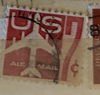
| SOURCE | TITLE| IMAGE MATCH | click to source page |
| www.ebay.com | US Scott # C60, Jet Airliner, 1960 7¢ Airmail Stamp, MNH | eBay | 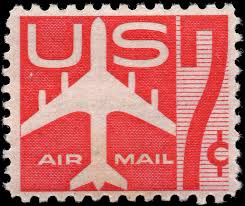 |
| www.mysticstamp.com | C60 - 1960 7c Jet Airliner, Carmine, Perf. 10.5x11 - Mystic ... | 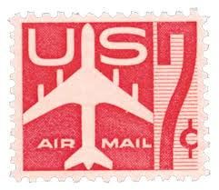 |
| www.etsy.com | 10 US Air Mail Postage Stamps, Jet Carmine, 7 Cent Stamps ... | 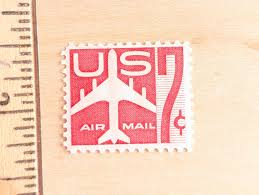 |
| www.ebay.com | Scott C60 US Air Mail Stamp 1960 7c Jet Used Vertical Pair ... | 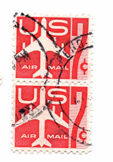 |
| postalmuseum.si.edu | Finishing the Job | National Postal Museum | 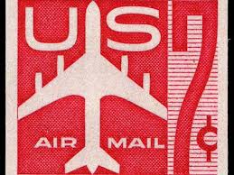 |
| www.ebay.com | US AIR POST STAMPS SCOTT #C60 7C 4 BLOCK MNH, 1960 | eBay | 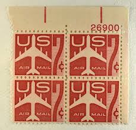 |
| www.etsy.com | 10 Jet Airliner Silhouette Postage Stamps - Pack of (10 ... | 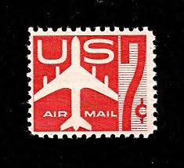 |
| www.mysticstamp.com | C51 - 1958 7c Jet Airliner, Blue, Perf. 10.5x11 - Mystic ... | 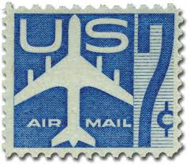 |
| www.ebid.net | US Stamp #C60 used: 1960 Air Mail - 7c Jetliner Silhouette ... | 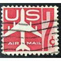 |
| www.ebay.com | Scott C60 US Air Mail Stamp 1960 7c Jet Used Stamp (a6) | eBay | 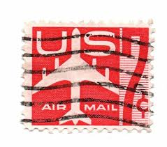 |
| littlepostagehouse.com | Red Jet Postage Stamps — Little Postage House | 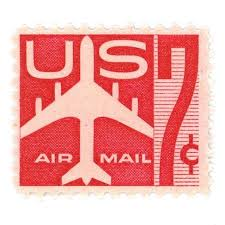 |
| www.etsy.com | Sheet of 100 Red Air Mail Stamps, 7 Cent, 1960 Unused ... | 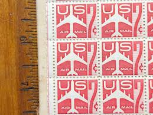 |
| findyourstampsvalue.com | Value of us airmail 7 cent stamps | 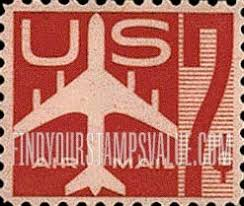 |
| www.tremainefoundation.org | TC: Warhol Red Airmail Stamp - Emily Hall Tremaine Foundation | 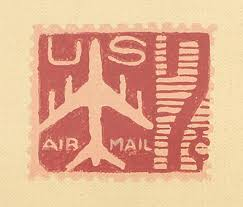 |
| postalmuseum.si.edu | The 1960 Jet Silhouette Stamp | National Postal Museum | 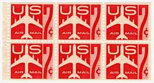 |
| www.ebay.com | 1959(?) Block of 4 U.S. Air Mail 7 Cent (Red) Stamps. (No. 6 ... | 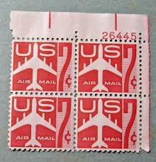 |
| edelweisspost.com | 10 Vintage Airplane Postage Stamps Red Mid Century Air Mail ... | 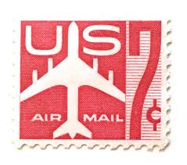 |
| www.mysticstamp.com | C33//C65 - 1946-62 US Airmail Look-Alikes, Set of 10 Mint ... | 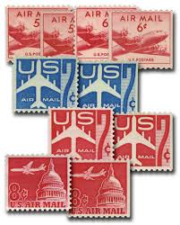 |
| shopinviting.com | inviting: vintage postage stamps of – inviting : letterpress ... | 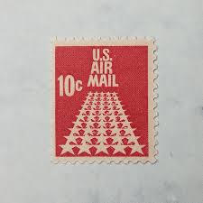 |
| gagosian.com | Andy Warhol: Early Hand-Painted Works, 980 Madison Avenue ... | 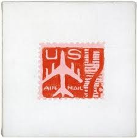 |
| www.alamy.com | Airplane print hi-res stock photography and images - Alamy | 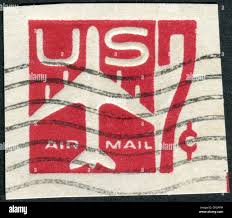 |
| heharris.com | 1971-1973 Mint Condition U.S. Airmail Stamp Set | 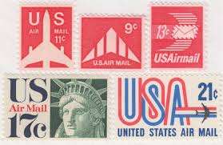 |
| www.vintagejewelryeden.com | Vintage US Air Mail Stamps: Collectible Airplane Postage ... | 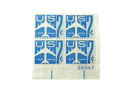 |
| edelweisspost.com | 10 Vintage Air Mail Postage Stamps Unused 25 Cent Vintage ... | 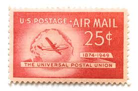 |
| littlepostagehouse.com | 50 Stars Air Mail Postage Stamps (10 Cents Each) — Little ... | 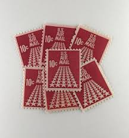 |
| www.pinterest.com | Vintage Letter Envelope | 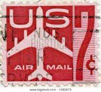 |
| vegas-stamps-hobbies.com | 1968 50 Star Runway-Airmail- Single 10c Postage Stamp ... | 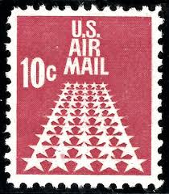 |
| www.cetn.com.br | What Is Shop Pair Of Stamps From 2018 Stamp Coil At An Post ... | 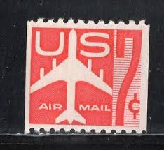 |
| www.shutterstock.com | Us Airmail Stamp: Over 769 Royalty-Free Licensable Stock ... | 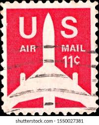 |
| esam.ir | تمبر کلاسیک ارزشمند پست هوایی آمریکا | 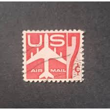 |
| www.amazon.com | Amazon.com: USPS Air Mail Red Forever First Class Postage ... | 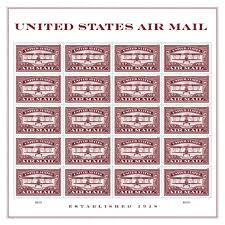 |
| www.ebay.com | US Scott #C60-61, Singles 1959 Air Mail 7c FVF Used | eBay | 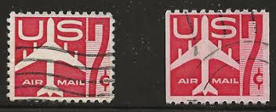 |
| www.istockphoto.com | United States Postage Stamp Stock Photo - Download Image ... | 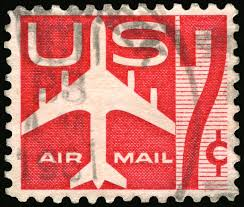 |
| fr.shopping.rakuten.com | timbre U S A, us air mail rouge, 7 cents, oblitéré | Rakuten | 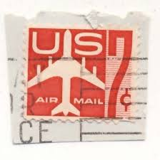 |
| www.folklib.net | U.S.P.S. Mint Stamp Posters | 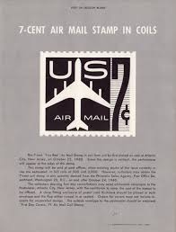 |
| www.americanairmailsociety.org | Stamps from 1950-1959 | 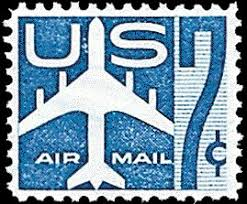 |
| www.leboncoin.fr | Timbre US Air Mail - Collection | 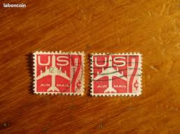 |
| www.istockphoto.com | 10+ Us Air Mail Postage Stamp 6 Cents Stock Photos, Pictures ... | 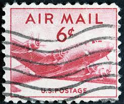 |
| www.arpinphilately.com | US Stamps - C - Air Mail for sale | Arpin Philately | 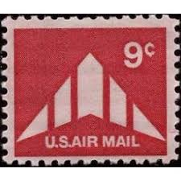 |
| www.stormthecastle.com | Stamp Collecting Words, terms and definitions | 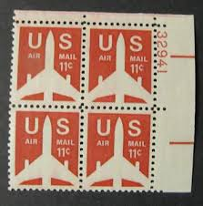 |
| www.mysticstamp.com | C61 - 1960 7c Jet Airliner, Carmine, Perf. 10 Horizontally ... | 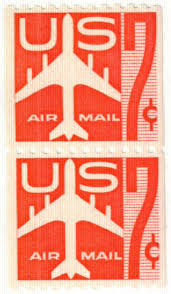 |
| esam.ir | تمبر پست هوایی آمریکا | 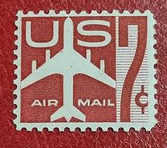 |
| www.dreamstime.com | US Air Mail Postage Stamp editorial photo. Image of ... | 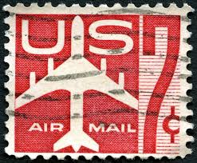 |
| www.etsy.com | 10 US Air Mail Postage Stamps, 11 Cent Stamps, 1971 Unused ... | 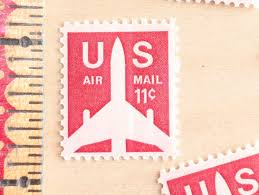 |
| www.alamy.com | Us postage stamp air mail hi-res stock photography and ... | 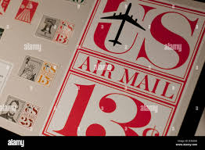 |
| www.flickr.com | stamps air mail air-post stamps Poste aérienne par avion ... | 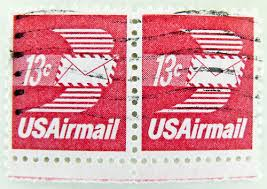 |
| www.linns.com | RF overprints: counterfeits easy to find; genuine examples ... | 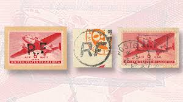 |
| it.todocoleccion.net | sello postal estados unidos 1960 , 7 centavos , - Acquista ... | 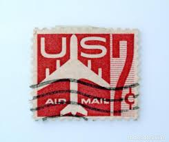 |
| www.shutterstock.com | 10+ Thousand Airplane Postage Stamp Royalty-Free Images ... | 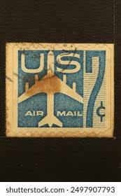 |
| www.ebay.com | 1958 Air Mail 7 Cent Block of Four U.S. Stamps (No. 1) | eBay | |
| en.wikipedia.org | List of United States airmail stamps - Wikipedia | |
| www.reddit.com | US Airmail Stamps DC-4 Skymaster : r/philately | |
| littlepostagehouse.com | USA Air Mail Postage Stamps (20 Cents Each) — Little Postage ... | |
| www.kitantik.com | Amerika Birleşik Devletleri Pulu - USA Stamp - Mektup ... | |
| www.facebook.com | Wow, 1962 Worlds Fair Stamp Seattle. When it was only $0.04 ... | |
| watermcbeer.org | RICHARD PETTIBONE AND ANDY WARHOL | |
| www.hipstamp.com | SC#C60 7¢ Jet (Red) Single (1960) Used | United States, Air ... | |
| www.linns.com | U.S. stamps feature Wright brothers and first plane | |
| www.dreamstime.com | 3 Cents USA Postage Stamp editorial stock photo. Image of ... | |
| stevelevinestamps-plus.com | U.S. Scott # C 86, 1973 11c Progress in Electronics ... |